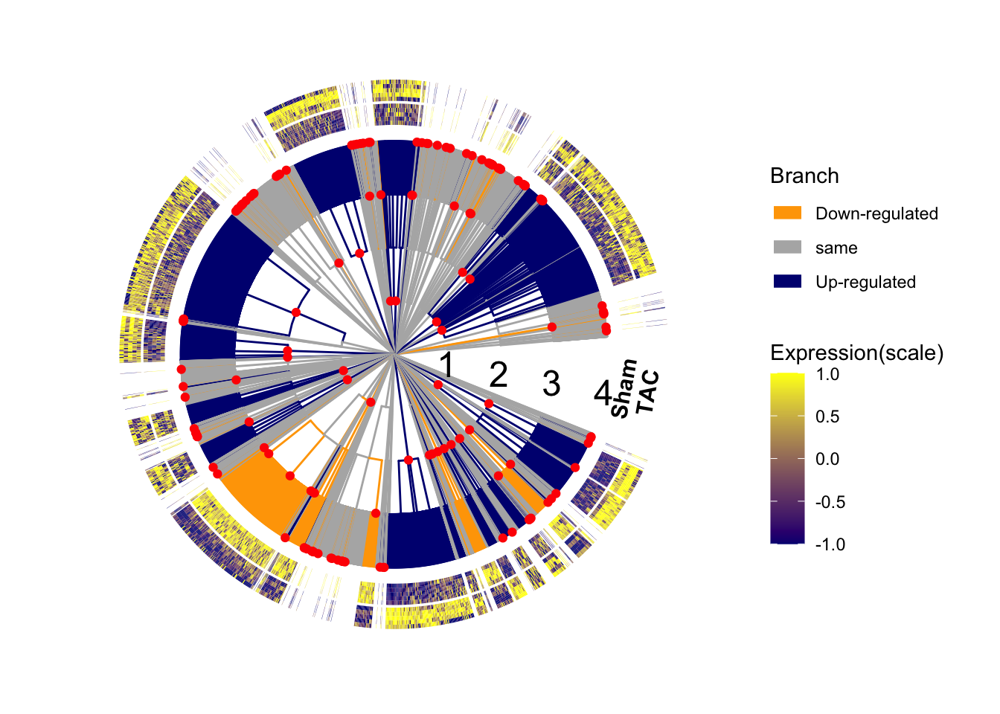

Last updated: 2020-05-20
Checks: 6 1
Knit directory: miRNA/
This reproducible R Markdown analysis was created with workflowr (version 1.5.0). The Checks tab describes the reproducibility checks that were applied when the results were created. The Past versions tab lists the development history.
The R Markdown file has staged changes. To know which version of the R Markdown file created these results, you’ll want to first commit it to the Git repo. If you’re still working on the analysis, you can ignore this warning. When you’re finished, you can run wflow_publish to commit the R Markdown file and build the HTML.
Great job! The global environment was empty. Objects defined in the global environment can affect the analysis in your R Markdown file in unknown ways. For reproduciblity it’s best to always run the code in an empty environment.
The command set.seed(20200424) was run prior to running the code in the R Markdown file. Setting a seed ensures that any results that rely on randomness, e.g. subsampling or permutations, are reproducible.
Great job! Recording the operating system, R version, and package versions is critical for reproducibility.
Nice! There were no cached chunks for this analysis, so you can be confident that you successfully produced the results during this run.
Great job! Using relative paths to the files within your workflowr project makes it easier to run your code on other machines.
Great! You are using Git for version control. Tracking code development and connecting the code version to the results is critical for reproducibility. The version displayed above was the version of the Git repository at the time these results were generated.
Note that you need to be careful to ensure that all relevant files for the analysis have been committed to Git prior to generating the results (you can use wflow_publish or wflow_git_commit). workflowr only checks the R Markdown file, but you know if there are other scripts or data files that it depends on. Below is the status of the Git repository when the results were generated:
Ignored files:
Ignored: .Rhistory
Ignored: .Rproj.user/
Ignored: LPS/.DS_Store
Ignored: LPS/.Rhistory
Ignored: LPS/.Rproj.user/
Ignored: LPS/data/.DS_Store
Ignored: cytof/.DS_Store
Ignored: cytof/DA/.DS_Store
Ignored: cytof/DA/code/.DS_Store
Ignored: cytof/DA/code/Preparation/.DS_Store
Ignored: cytof/DS/.DS_Store
Ignored: cytof/DS/code/.DS_Store
Ignored: cytof/DS/code/Preparation/.DS_Store
Ignored: miRNA/.DS_Store
Ignored: miRNA/.Rhistory
Ignored: miRNA/.Rproj.user/
Ignored: microbe/.Rhistory
Ignored: microbe/.Rproj.user/
Untracked files:
Untracked: .gitignore
Untracked: LPS/.Rprofile
Untracked: LPS/.gitattributes
Untracked: LPS/.gitignore
Untracked: LPS/LPS.Rproj
Untracked: LPS/data/LC016.zip
Untracked: LPS/data/LC016/
Untracked: LPS/data/LC017.zip
Untracked: LPS/data/LC017/
Untracked: LPS/data/LC019.zip
Untracked: LPS/data/LC019/
Untracked: LPS/data/LC020.zip
Untracked: LPS/data/LC020/
Untracked: LPS/data/LC022.zip
Untracked: LPS/data/LC022/
Untracked: LPS/data/LC023.zip
Untracked: LPS/data/LC023/
Untracked: LPS/data/LC025.zip
Untracked: LPS/data/LC025/
Untracked: LPS/data/LC026.zip
Untracked: LPS/data/LC026/
Untracked: LPS/data/metadata.xlsx
Untracked: LPS/output/3-treeclimbR.RData
Untracked: LPS/output/LPS.eps
Untracked: LPS/output/MAGL-SCE.rds
Untracked: LPS/output/all_mk.rds
Untracked: LPS/output/ao.rds
Untracked: LPS/output/as.rds
Untracked: LPS/output/cell_info.rds
Untracked: LPS/output/cell_tree.rds
Untracked: LPS/output/known_mk.rds
Untracked: LPS/output/se_count.rds
Untracked: LPS/output/se_mk.rds
Untracked: LPS/temp/all_mk.rds
Untracked: LPS/temp/ias.rds
Untracked: miRNA/data/hierarchy.pdf
Untracked: miRNA/data/hierarchy.png
Untracked: miRNA/data/hierarchy.svg
Untracked: miRNA/draft/
Untracked: miRNA/output/heart_microRN.eps
Untracked: miRNA/output/heart_microRNA.pdf
Untracked: treeclimbR_article.Rproj
Unstaged changes:
Modified: miRNA/analysis/3-Visualization.Rmd
Modified: miRNA/output/heart_microRNA.eps
Modified: microbe/analysis/3-Visualization.Rmd
Modified: microbe/docs/3-Visualization.html
Modified: microbe/docs/figure/3-Visualization.Rmd/unnamed-chunk-11-1.png
Modified: microbe/docs/figure/3-Visualization.Rmd/unnamed-chunk-4-1.png
Modified: microbe/docs/figure/3-Visualization.Rmd/unnamed-chunk-6-1.png
Modified: microbe/docs/figure/3-Visualization.Rmd/unnamed-chunk-8-1.png
Modified: microbe/output/baby_born.eps
Staged changes:
Modified: miRNA/analysis/2-Analysis.Rmd
Modified: miRNA/analysis/3-Visualization.Rmd
Note that any generated files, e.g. HTML, png, CSS, etc., are not included in this status report because it is ok for generated content to have uncommitted changes.
These are the previous versions of the R Markdown and HTML files. If you’ve configured a remote Git repository (see ?wflow_git_remote), click on the hyperlinks in the table below to view them.
| File | Version | Author | Date | Message |
|---|---|---|---|---|
| Rmd | dca13c4 | fionarhuang | 2020-04-24 | upload analysis of miRNA data |
| html | dca13c4 | fionarhuang | 2020-04-24 | upload analysis of miRNA data |
suppressPackageStartupMessages({
library(TreeSummarizedExperiment)
library(dplyr)
library(treeclimbR)
library(ggtree)
library(TreeHeatmap)
library(ggplot2)
library(viridis)
library(ggnewscale)
library(edgeR)
library(scales)
library(grid)
library(cowplot)
library(png)
})tse <- readRDS("output/heart_origin_tse.rds")
candB <- readRDS("output/heart_origin_result.rds")
# information about sequence
origin_df <- readRDS("data/origin_dataframe.rds")# tree
heart_tree <- rowTree(tse)
# nodes
all_node <- showNode(tree = heart_tree, only.leaf = FALSE)
# figures
fig_tree <- ggtree(heart_tree, ladderize = FALSE,
layout = "fan",
open.angle = 10,
size = 0.5)Scale for 'y' is already present. Adding another scale for 'y', which will
replace the existing scale.fig_tree
| Version | Author | Date |
|---|---|---|
| dca13c4 | fionarhuang | 2020-04-24 |
# prepare data to color branches
result <- topNodes(object = candB, n = Inf, p_value = 0.05)
loc_0.05 <- result$node
names(loc_0.05) <- ifelse(result$logFC > 0, "Up-regulated", "Down-regulated")
br_0.05 <- findOS(tree = heart_tree, node = loc_0.05,
only.leaf = FALSE, self.include = TRUE)
df_branch <- data.frame(node = unlist(br_0.05),
Branch = rep(names(loc_0.05),
unlist(lapply(br_0.05, length)))) %>%
distinct() %>%
add_row(node = setdiff(all_node, unlist(br_0.05)),
Branch = "same")
# branch colors
branch_col <- c("same" = "grey70", "Up-regulated" = "navy",
"Down-regulated" = "orange")
# figure: tree
fig_tree <- fig_tree %<+%
df_branch +
aes(color = Branch) +
scale_color_manual(values = branch_col,
guide = guide_legend(
override.aes = list(size = 3),
order = 1)) +
geom_point2(aes(subset = (node %in% loc_0.05)),
color = "red", shape = 19, size = 1.5)
fig_tree
| Version | Author | Date |
|---|---|---|
| dca13c4 | fionarhuang | 2020-04-24 |
Branches without signal are shrinked to save space.
# branches without signal
leaf <- showNode(tree = heart_tree, only.leaf = TRUE)
leaf_yes <- findOS(tree = heart_tree, node = loc_0.05,
only.leaf = TRUE, self.include = TRUE)
leaf_no <- setdiff(leaf, unlist(leaf_yes))
node_no <- signalNode(tree = heart_tree, node = leaf_no)
node_no <- node_no[!isLeaf(tree = heart_tree, node = node_no)]
circo_full <- fig_tree
for (i in node_no) {
circo_full <- scaleClade(circo_full, node = i, scale = 0.2)
}
circo_full
| Version | Author | Date |
|---|---|---|
| dca13c4 | fionarhuang | 2020-04-24 |
Branches that have signal and have more than 10 leaves are scaled to have more space.
# zoom in signal branches
loc_a <- findOS(tree = heart_tree, node = loc_0.05,
only.leaf = TRUE, self.include = TRUE)
len <- unlist(lapply(loc_a, length))
node_a <- loc_0.05[len > 10]
for (i in node_a) {
circo_full <- scaleClade(circo_full, node = i, scale = 3.5)
}ux <- setdiff(sort(unique(circo_full$data$x)), 0)
names(ux) <- c("genomic_cluster", "primary_tx", "miRNA", "sequence" )
df_layer <- data.frame(x = ux)%>%
arrange(x) %>%
mutate(y = max(circo_full$data$y, na.rm = TRUE),
layer = factor(names(ux), levels = names(ux)))
# annotate the four levels on the tree
layer_shape <- 49:52
names(layer_shape) <- names(ux)
circo_full <- circo_full +
geom_point(data = df_layer,
aes(x, y = y + 210, shape = layer),
size = 6,
inherit.aes = FALSE, show.legend = FALSE) +
scale_shape_manual(values = layer_shape,
guide = guide_legend(
override.aes = list(size = 4),
order = 1)) +
labs(shape = "Hierarchy")
circo_full
| Version | Author | Date |
|---|---|---|
| dca13c4 | fionarhuang | 2020-04-24 |
The heatmap uses data on the leaf level. Counts of miRNAs in cpm are firstly log transformed, and then standardized using scale for each miRNA across samples.
# the data on the leaf level for signal branches
yes_L <- findOS(tree = heart_tree, node = loc_0.05,
only.leaf = TRUE, self.include = TRUE)
yes_L <- rowLinks(tse)$nodeNum %in% unlist(yes_L)
# scale counts:
# 1. log transformed in cpm counts
# 2. log-count of each miRNA is further scaled among samples
# log-transformed by columns
count_L <- assays(tse)[[1]][yes_L, ]
countL <- cpm(count_L)
scale_L <- log(countL + 1)
# standardized
scale_L <- t(apply(scale_L, 1, FUN = function(y) {
ly <- length(unique(y))
if (ly == 1) {
sy <- rep(0, length(y))
} else {
sy <- scale(y)
}
return(sy)
}))
rownames(scale_L) <- rownames(count_L)
colnames(scale_L) <- colnames(count_L)
dim(scale_L)[1] 1250 10Heatmap is only on leaves that are identified as differentially abundant.
surgery <- colData(tse)$surgery
surgery <- ifelse(surgery == "Sham", "Sham", "TAC")
names(surgery) <- colnames(tse)
fig2 <- TreeHeatmap(tree = heart_tree,
rel_width = 0.2,
tree_fig = circo_full,
hm_data = scale_L,
legend_title_hm = "Expression(scale)",
tree_hm_gap = 0.3,
column_split = surgery,
column_split_gap = 0.05,
column_split_label = c("Sham" = "Sham",
"TAC" = "TAC"),
split_label_angle = 80,
split_label_size = 4,
split_label_offset_y = 260) +
scale_fill_gradient(low = "navy", high = "yellow",
limits = c(-1, 1),
oob = squish,
guide = guide_colorbar(order = 3)) +
new_scale_fill() Scale for 'fill' is already present. Adding another scale for 'fill', which
will replace the existing scale.fig2
| Version | Author | Date |
|---|---|---|
| dca13c4 | fionarhuang | 2020-04-24 |
leaf_a <- findOS(tree = heart_tree, node = node_a,
only.leaf = TRUE, self.include = TRUE)
names(leaf_a) <- transNode(tree = heart_tree, node = node_a,
use.alias = TRUE)
df_a <- lapply(node_a, FUN = function(x){
xx <- rowData(tse)[rowLinks(tse)$nodeNum %in% x, ]
})
mir_a <- lapply(leaf_a, FUN = function(x){
ix <- (rowLinks(tse)$nodeNum %in% x) & rowLinks(tse)$isLeaf
xx <- rowData(tse)[ix, "Annotation"]
unique(as.character(xx))
})
head(mir_a)$alias_7127
[1] "mmu-mir-208b"
$alias_6927
[1] "mmu-mir-199a-1;mmu-mir-199a-2;mmu-mir-199b"
$alias_7115
[1] "mmu-mir-214" "mmu-mir-199a-2"
$alias_6992
[1] "mmu-mir-455"
$alias_6393
[1] "mmu-mir-434" "mmu-mir-127" "mmu-mir-136" "mmu-mir-433" "mmu-mir-431"
[6] "mmu-mir-337" "mmu-mir-540" "mmu-mir-673"
$alias_6651
[1] "mmu-mir-140"mir_s_a <- lapply(mir_a, FUN = function(x){
if (length(x) == 1) {
gsub(pattern = "mmu-mir-", "", x)
} else {
xx <- unique(stringr::str_extract(x, "^mmu-mir-[0-9]+"))
if (length(xx) == 1) {
x <- unlist(strsplit(x = x, split = ";"))
x <- unique(x)
px <- paste(x, collapse = ";")
gsub(pattern = "mmu-mir-", "", px)
} else {
"mixed"
}}
})
mat_a <- data.frame(mir = (unlist(mir_s_a)))
rownames(mat_a) <- names(mir_s_a)
length(unique(mat_a[, 1]))[1] 18dat <- getData(tree_hm = fig2, type = "heatmap")
df_line <- data.frame(x = max(dat$x)+0.25,
y1 = max(min(dat$y), 0),
y2 = max(dat$y))
cols <- c("darkmagenta", "darkorchid1", "cornflowerblue", "cyan3",
"blue", "plum2", "orange", "firebrick2", "tan4",
"deeppink", "darkslateblue", "darkred", "magenta",
"darkseagreen",
"mediumpurple", "darkolivegreen1", "gray", "black")
names(cols) <- sort(unique(mat_a[, 1]))
fig3 <- TreeHeatmap(tree = heart_tree,
tree_fig = fig2,
tree_hm_gap = 1.5,
rel_width = 0.05,
hm_data = mat_a,
legend_title_hm = "miRNA") +
scale_fill_manual(values = cols,
guide = guide_legend(order = 4, ncol = 2)) +
geom_segment(data = df_line,
aes(x = x, y = y1, xend = x, yend = y2),
linetype = "dashed",
inherit.aes = FALSE) Scale for 'fill' is already present. Adding another scale for 'fill', which
will replace the existing scale.fig3 +
theme(
aspect.ratio = 1,
legend.position = c(0.12, 0.5),
legend.background = element_rect(fill = NA),
plot.title = element_text(hjust = 0.5),
legend.title = element_text(size = 9),
legend.text = element_text(size = 7),
legend.key.size = unit(0.3, "cm"),
legend.spacing.x = unit(0.2, "mm"),
legend.margin = margin(t = 0, b = 0, r = 20, l = 0),
legend.box.margin=margin(t = -5, b = -5, r = 25, l = -60),
plot.margin = margin(t = -50, b = -50, r = -150, l = -40)
)
| Version | Author | Date |
|---|---|---|
| dca13c4 | fionarhuang | 2020-04-24 |
Identified nodes are annotated with their correspoinding hierarchy levels.
source("code/fun_inner_label.R")
# leaf labels
leaf_0.05 <- findOS(tree = heart_tree, node = loc_0.05,
only.leaf = TRUE, self.include = TRUE)
label_0.05 <- transNode(tree = heart_tree, node = unlist(leaf_0.05))
# hierarchical levels of detected nodes
node_info <- origin_df %>%
filter(sequence %in% label_0.05)
node_lab <- fun_inner_label(tree = heart_tree,
tree_df = node_info,
column_leaf = "sequence")Joining, by = "L1"lab_0.05 <- lapply(node_lab, FUN = function(x) {
x[x %in% loc_0.05]
})
# the number of nodes detected at each level
lapply(lab_0.05, length)$`1`
[1] 8
$`2`
[1] 16
$`3`
[1] 19
$`4`
[1] 123# on genomic_cluster level
lab_0.05$`1`chr12:109563692-109595388 chr11:70234717-70235135 chr9:51103034-51103645
6393 6546 6554
chr12:109709060-109747960 chrX:7237683-7248497 chrX:19146294-19146971
6411 6742 6785
chr1:195037040-195037634 chr1:162217814-162223477
6869 7115 # data to plot points
dat <- getData(tree_hm = fig3, type = "heatmap")
df_point <- data.frame(node = lab_0.05$`1`,
"Genomic_range" = factor(names(lab_0.05$`1`))) %>%
left_join(dat) %>%
mutate(x = x + 0.2, y = y )Joining, by = "node"# colors for points
cbPalette <- c("#999999", "#E69F00", "#56B4E9", "#009E73",
"#F0E442", "#0072B2", "#D55E00", "#CC79A7")
col_g <- cols[df_point$value]
col_g[col_g == "black"] <- cbPalette[seq_len(sum(col_g == "black"))]
names(col_g) <- df_point$Genomic_range
fig4 <- fig3 +
new_scale_color() +
geom_point(data = df_point,
aes(x = x, y = y, color = Genomic_range),
shape = 19, size = 4,
inherit.aes = FALSE) +
scale_color_manual(values = col_g) +
guides(color = guide_legend(order = 5, ncol = 2))+
theme(
aspect.ratio = 1,
legend.position = c(0.20, 0.33),
legend.background = element_rect(fill = NA),
plot.title = element_text(hjust = 0.5),
legend.title = element_text(size = 7),
legend.text = element_text(size = 6),
legend.key.size = unit(0.25, "cm"),
legend.spacing.x = unit(0.2, "mm"),
legend.margin = margin(t = 0, b = 0, r = 50, l = 0),
legend.box.margin=margin(t = -5, b = -5, r = 25, l = -60),
plot.margin = margin(t = -50, b = -50, r = -150, l = -40)
)
fig4
| Version | Author | Date |
|---|---|---|
| dca13c4 | fionarhuang | 2020-04-24 |
ggsave("output/heart_microRNA.eps", fig4,
units = "in", width = 7.8, height = 6.5,
dpi = 300)img <- readPNG("data/hierarchy.png")
g <- rasterGrob(img, width = 4.265, height = 4.453,
default.units = "cm",
interpolate=FALSE)
figF <- ggdraw(fig4) +
draw_grob(g, x = -0.38, y = 0.3, scale = 1)
figFggsave("output/heart_microRNA.pdf", figF,
units = "in", width = 7.8, height = 6.5,
dpi = 300)
sessionInfo()R version 3.6.1 (2019-07-05)
Platform: x86_64-apple-darwin15.6.0 (64-bit)
Running under: macOS Mojave 10.14.4
Matrix products: default
BLAS: /Library/Frameworks/R.framework/Versions/3.6/Resources/lib/libRblas.0.dylib
LAPACK: /Library/Frameworks/R.framework/Versions/3.6/Resources/lib/libRlapack.dylib
locale:
[1] en_US.UTF-8/en_US.UTF-8/en_US.UTF-8/C/en_US.UTF-8/en_US.UTF-8
attached base packages:
[1] grid parallel stats4 stats graphics grDevices utils
[8] datasets methods base
other attached packages:
[1] png_0.1-7 cowplot_1.0.0
[3] scales_1.1.0 edgeR_3.28.0
[5] limma_3.42.0 ggnewscale_0.4.0
[7] viridis_0.5.1 viridisLite_0.3.0
[9] ggplot2_3.3.0 TreeHeatmap_0.1.0
[11] ggtree_2.1.6 treeclimbR_0.1.1
[13] dplyr_0.8.5 TreeSummarizedExperiment_1.3.0
[15] SingleCellExperiment_1.8.0 SummarizedExperiment_1.16.0
[17] DelayedArray_0.12.0 BiocParallel_1.20.0
[19] matrixStats_0.55.0 Biobase_2.46.0
[21] GenomicRanges_1.38.0 GenomeInfoDb_1.22.0
[23] IRanges_2.20.0 S4Vectors_0.24.0
[25] BiocGenerics_0.32.0 workflowr_1.5.0
loaded via a namespace (and not attached):
[1] backports_1.1.6 circlize_0.4.8
[3] diffcyt_1.6.1 plyr_1.8.5
[5] igraph_1.2.4.1 lazyeval_0.2.2
[7] ConsensusClusterPlus_1.50.0 splines_3.6.1
[9] flowCore_1.52.0 fda_2.4.8
[11] TH.data_1.0-10 digest_0.6.25
[13] htmltools_0.4.0 fansi_0.4.1
[15] magrittr_1.5 CytoML_1.12.0
[17] cluster_2.1.0 ks_1.11.6
[19] ComplexHeatmap_2.2.0 RcppParallel_4.4.4
[21] R.utils_2.9.0 sandwich_2.5-1
[23] flowWorkspace_3.34.0 colorspace_1.4-1
[25] rrcov_1.4-7 xfun_0.11
[27] crayon_1.3.4 RCurl_1.95-4.12
[29] jsonlite_1.6.1 hexbin_1.28.0
[31] graph_1.64.0 lme4_1.1-21
[33] dirmult_0.1.3-4 survival_2.44-1.1
[35] zoo_1.8-6 ape_5.3
[37] glue_1.4.0 flowClust_3.24.0
[39] gtable_0.3.0 zlibbioc_1.32.0
[41] XVector_0.26.0 GetoptLong_0.1.7
[43] ggcyto_1.14.0 IDPmisc_1.1.19
[45] Rgraphviz_2.30.0 shape_1.4.4
[47] DEoptimR_1.0-8 mvtnorm_1.0-11
[49] Rcpp_1.0.4 clue_0.3-57
[51] tidytree_0.3.3.991 openCyto_1.24.0
[53] mclust_5.4.5 FlowSOM_1.18.0
[55] tsne_0.1-3 RColorBrewer_1.1-2
[57] ellipsis_0.3.0 farver_2.0.3
[59] pkgconfig_2.0.3 XML_3.98-1.20
[61] R.methodsS3_1.7.1 flowViz_1.50.0
[63] locfit_1.5-9.1 labeling_0.3
[65] reshape2_1.4.3 flowStats_3.44.0
[67] tidyselect_1.0.0 rlang_0.4.5
[69] later_1.0.0 munsell_0.5.0
[71] tools_3.6.1 cli_2.0.2
[73] evaluate_0.14 stringr_1.4.0
[75] yaml_2.2.0 knitr_1.26
[77] fs_1.3.1 robustbase_0.93-5
[79] purrr_0.3.3 RBGL_1.62.1
[81] nlme_3.1-142 whisker_0.4
[83] R.oo_1.23.0 aplot_0.0.4.991
[85] compiler_3.6.1 treeio_1.11.3
[87] tibble_3.0.0 pcaPP_1.9-73
[89] stringi_1.4.6 lattice_0.20-38
[91] Matrix_1.2-17 nloptr_1.2.1
[93] vctrs_0.2.4 pillar_1.4.3
[95] lifecycle_0.2.0 BiocManager_1.30.10
[97] GlobalOptions_0.1.1 data.table_1.12.6
[99] bitops_1.0-6 corpcor_1.6.9
[101] patchwork_1.0.0 httpuv_1.5.2
[103] R6_2.4.1 latticeExtra_0.6-28
[105] promises_1.1.0 KernSmooth_2.23-15
[107] gridExtra_2.3 codetools_0.2-16
[109] boot_1.3-23 MASS_7.3-51.4
[111] gtools_3.8.1 assertthat_0.2.1
[113] rprojroot_1.3-2 rjson_0.2.20
[115] withr_2.1.2 mnormt_1.5-5
[117] multcomp_1.4-10 GenomeInfoDbData_1.2.2
[119] ncdfFlow_2.32.0 tidyr_1.0.2
[121] minqa_1.2.4 rvcheck_0.1.8
[123] rmarkdown_1.17 git2r_0.26.1
[125] base64enc_0.1-3 ellipse_0.4.1